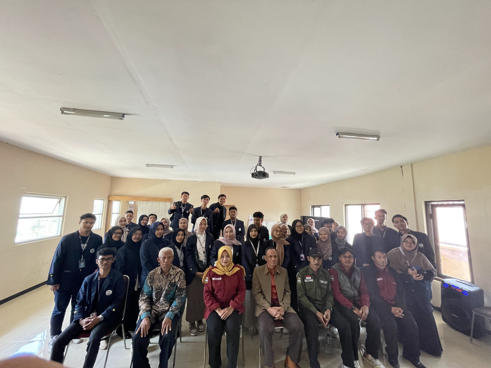

Kuliah Kerja Nyata - SISDAMAS UIN Sunan Gunung Djati Bandung
Desa Pakuhaji Kecamatan Ngamprah

Desa Pakuhaji terletak di lokasi strategis di Kecamatan Ngamprah, karena dilalui oleh jalan alternatif yang
menghubungkan Jalan Raya Cimareme dengan Cisarua melalui Jalan Haji Gofur. Desa ini juga dikenal sebagai lokasi
objek wisata, termasuk Wisata Kuda Pakuhaji dan area perkemahan PH50.
Pacuan kuda merupakan salah satu daya tarik utama Desa Pakuhaji. Setiap tahun, desa ini mengadakan festival
pacuan kuda yang menarik perhatian pengunjung dari berbagai daerah. Perlombaan ini tidak hanya menampilkan
keterampilan berkuda yang mengesankan, tetapi juga merupakan manifestasi dari tradisi dan budaya lokal yang
telah lama dilestarikan. Suasana festival yang meriah dan penuh semangat ini menjadi momen penting bagi komunitas
desa serta pengunjung yang ingin merasakan adrenalin dan kegembiraan dalam acara yang unik ini.
Di samping itu, Desa Pakuhaji juga dikenal dengan kekayaan budaya dan tradisi lokal yang kental. Masyarakatnya
yang ramah memelihara adat istiadat dan kesenian tradisional, mulai dari upacara adat hingga pertunjukan pencak silat.
Keberagaman budaya yang ada di desa ini menjadi daya tarik tersendiri, memberikan kesempatan kepada pengunjung
untuk menyaksikan dan belajar tentang kekayaan budaya Sunda yang diwariskan secara turun-temurun.
Dalam sektor pertanian, Desa Pakuhaji terkenal dengan hasil pertanian yang melimpah. Tanah yang subur dan teknik
bertani tradisional yang dipertahankan menghasilkan produk pertanian berkualitas tinggi seperti padi, sayuran,
dan buah-buahan. Aktivitas pertanian ini tidak hanya menjadi sumber mata pencaharian utama bagi penduduk desa
tetapi juga menyokong ekonomi lokal dan memperkuat ketahanan pangan.
Pemerintah desa juga aktif dalam pengembangan infrastruktur dan layanan publik untuk meningkatkan kualitas
hidup warganya. Berbagai proyek pembangunan, terutama di bidang pendidikan dan kesehatan, bertujuan untuk
membawa dampak positif bagi masyarakat serta memperkuat kemandirian desa. Dengan kombinasi keindahan alam,
kekayaan budaya, dan kegiatan seperti pacuan kuda, Desa Pakuhaji menawarkan pengalaman yang lengkap dan
memikat bagi setiap pengunjungnya.